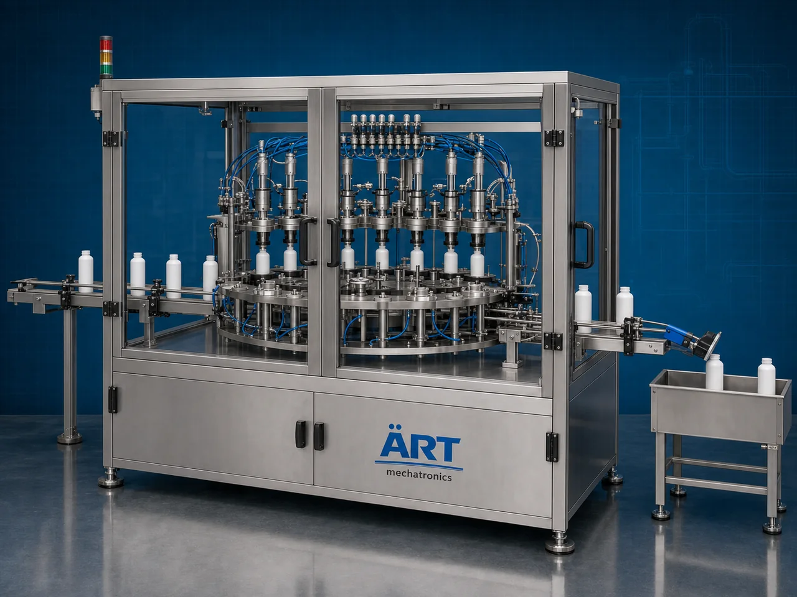

Container Leak Detector Machine (Automatic Bottle, Jar & Drum Leak Testing System)
A Container Leak Detector Machine, also known as a Bottle Leak Testing Machine, Leak Inspection Machine, Container Leak Detection System, or Automatic Leak Testing Machine, is an advanced industrial quality control solution designed for automatic container inspection, pressure testing, vacuum testing, air leak detection, seal integrity testing, rejection handling, and high-speed packaging line operations for bottles, jars, jugs, jerry cans, canisters, drums, gallons, buckets, aerosol containers, and industrial packaging containers.

About the Leak Detector
Container leak detection systems are widely used for:
- Bottle leak testing
- Jar seal inspection
- Jerry can leakage detection
- Drum leak testing
- Gallon seal integrity testing
- Aerosol container inspection
- Industrial packaging quality control
- Leak-proof packaging verification
The machine improves:
- Packaging quality assurance
- Leak-proof packaging reliability
- Product safety
- Production efficiency
- Packaging consistency
- Customer satisfaction
- Transportation safety
Industrial container leak detector machines use:
- Automatic container feeding systems
- Servo synchronized inspection systems
- PLC and HMI automation controls
- Pressure and vacuum testing systems
- Automatic reject mechanisms
to automatically detect leaks and defective containers with superior inspection accuracy and high production efficiency.
Container leak detector machines are widely used in industries such as:
Beverage industries Food processing industries Chemical industries Cosmetic industries Pharmaceutical industries Lubricant industries Agrochemical industries FMCG industries
where leak-proof packaging, product safety, and high-speed quality inspection are essential.
The machine is highly suitable for:
- Bottle leak inspection
- Drum leakage testing
- Gallon seal verification
- Jerry can leak detection
- Cosmetic container inspection
- Industrial packaging quality control
ART Mechatronics offers high-performance container leak detector machines, engineered for continuous industrial operation, precision inspection performance, accurate leak detection, and reliable long-term packaging automation.
Working Principle of Container Leak Detector Machine
- 1. Container Feeding Containers are automatically fed into inspection section through synchronized conveyor systems.
- 2. Leak Testing Process Machine automatically performs pressure or vacuum based testing to identify leaks, seal failures, or defective containers.
Advanced sensors and servo synchronization ensure accurate testing and smooth container handling.
- 3. Leak Detection Operation Machine handles: ✔ PET bottles ✔ Glass bottles ✔ Jars ✔ Jugs ✔ Jerry cans ✔ Drums ✔ Gallons ✔ Industrial containers
accurately and continuously.
- 4. Seal Integrity & Quality Inspection Process Machine performs: Pressure testing Vacuum testing Seal integrity inspection Micro leak detection Leak-proof verification
for safe and high-quality packaging assurance.
- 5. Automatic Rejection & Inspection Integration Optional systems include: Defective container rejection Vision inspection systems Batch coding integration Data logging systems Quality control synchronization
- 6. Finished Container Discharge Approved containers discharged automatically for: Labeling Cartoning Case packing Warehouse storage Retail distribution
Types of Container Leak Detector Machines
- 1. Bottle Leak Testing Machine Designed for: ✔ Beverage and liquid bottle packaging applications
- 2. Jar & Jug Leak Detector Machine Suitable for: ✔ Food and FMCG packaging inspection systems
- 3. Jerry Can & Drum Leak Testing Machine Uses: ✔ Heavy-duty industrial liquid container inspection systems
- 4. Vacuum Leak Detection Machine Designed for: ✔ High precision seal integrity testing systems
- 5. Servo Driven Leak Detector Machine Suitable for: ✔ High-speed precision inspection operations
- 6. Fully Automatic Container Leak Testing System Designed for: ✔ Complete industrial packaging automation lines
Industries Using Container Leak Detector Machines
🥤 Beverage Industry Water bottles, juices, soft drinks, and beverage packaging inspection systems. 🍅 Food Processing Industry Sauces, syrups, edible oils, and food liquid packaging quality systems. ⚗️ Chemical Industry Industrial liquids, solvents, and chemical container inspection systems. 🧴 Cosmetic & Personal Care Industry Perfumes, lotions, shampoos, and cosmetic packaging inspection systems. 💊 Pharmaceutical Industry Medicine bottles and sterile healthcare packaging inspection systems. 🛒 FMCG Industry Consumer liquid products and retail packaging quality inspection systems.
Features & Advantages
- High-speed automatic leak testing operation
- Accurate pressure and vacuum inspection systems
- Reliable leak-proof packaging verification
- PLC and servo automation control systems
- Improves packaging safety and product quality
- Reduces defective product dispatch risk
- Supports multiple container sizes and formats
- Reliable long-term industrial performance
- Smooth and continuous packaging line integration
Technical Highlights
Machine Type: Automatic container leak detector machine Industrial leak testing system Packaging inspection machine Container Type: PET bottles Glass jars Jerry cans Canisters Drums Gallons Buckets Inspection Integration: Pressure testing systems Vacuum testing systems Seal integrity inspection systems Automatic rejection systems Features: PLC control system Servo synchronization Touchscreen HMI Automatic inspection systems Data logging integration Applications: Beverages Oils Chemicals Cosmetic liquids Pharmaceutical products Industrial liquids Automation: Semi-automatic Fully automatic industrial systems
Turnkey Container Leak Testing Solutions
ART Mechatronics offers: Complete leak testing systems Automatic packaging inspection solutions Packaging automation integration systems Conveyor synchronization systems Installation & commissioning After-sales service & AMC
Why Choose Art Mechatronics
Expertise in industrial packaging and automation systems Customized leak testing solutions for multiple industries High-performance and precision inspection technology Advanced PLC and servo automation systems Proven industrial packaging performance across sectors
Applications
Beverage Manufacturing Plants Food Processing Industries Chemical Packaging Facilities Cosmetic Manufacturing Units Pharmaceutical Packaging Plants FMCG Packaging Industries
Get pricing & specs for the Leak Detector
Share the product, target capacity, current process and plant location. These details help our engineers discuss the right machine or line configuration.
One partner, from design to start-up
ART Mechatronics designs, manufactures, installs and commissions your Leak Detector solution with regional presence in India, UAE and Thailand.